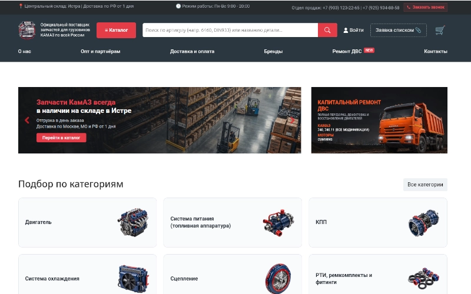
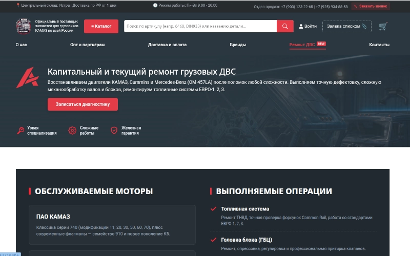
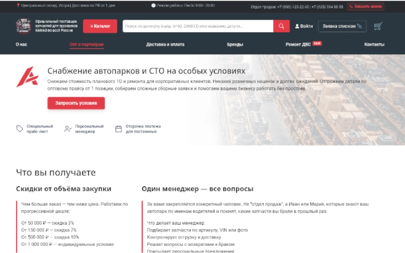
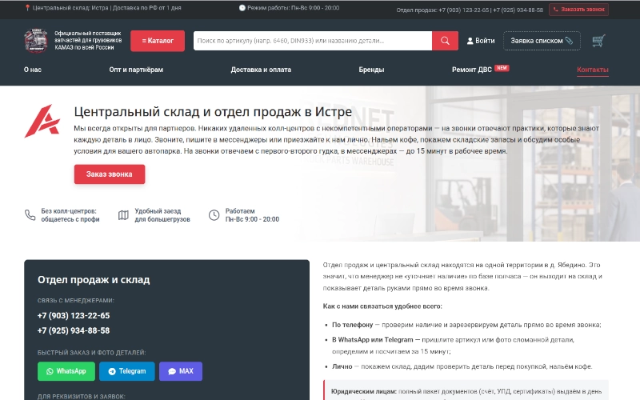
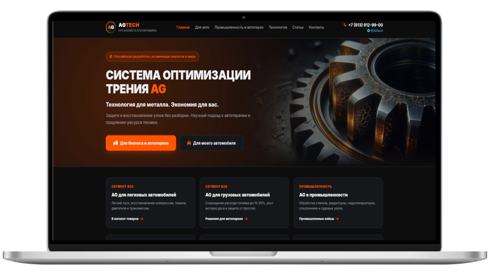
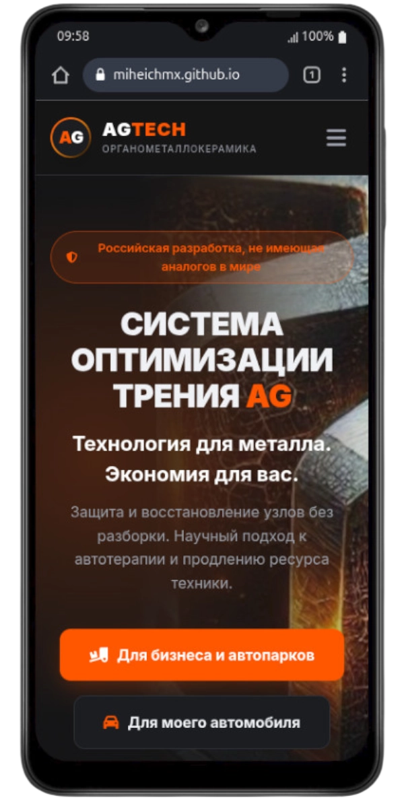

[01] ПРЕМИУМ ТЕХЦЕНТР
БОЕВОЙ РЕЖИМСайт заточен под премиальный сегмент и сложный капитальный ремонт ДВС, от которого шарахаются официальные дилеры. Мы отказались от скучных многостраничников и собрали умный динамический мультилендинг (Хаб и 8 сателлитов под конкретные марки авто).
Динамическая архитектура
Скрипт мгновенно подменяет контент, фоны и боли (например, растяжение цепей на V8 или стружка в TDI) под выбранную марку без перезагрузки страницы.
Воронка захвата
Унылые формы заменены на 3-шаговый интерактивный квиз. Клиент вовлекается, прокликивая свои реальные симптомы поломки (жор масла, стуки, перегрев).
Маршрутизация лидов
Заявки жестко пробивают спам-фильтры Яндекса и моментально пушатся в Telegram/телефон. Мастер спокойно крутит гайки, пока система генерирует теплых клиентов.
[02] ЗАПЧАСТИ КАМАЗ
БОЕВОЙ РЕЖИМСпециализированная B2B-платформа для суровых снабженцев автопарков и мотористов. Обычный каталог запчастей (более 6000 наименований) превращен в скоростной инструмент, который закрывает главные боли целевой аудитории: быстрый поиск и работа по безналу.
B2B-Архитектура
Интерфейс заточен под опт: скачивание договоров в один клик, заказ деталей списком и важнейшая фича — формирование повторного заказа из истории за 30 секунд.
Бесшовный UX
Внедрена AJAX-корзина для мотористов, собирающих заказы из десятков позиций. Товары добавляются моментально, без раздражающих перезагрузок страниц.
Складская интеграция
Прямая связка с программой учета «Фолио». Кастомный скрипт автоматически обновляет цены и остатки по внутренним артикулам, гарантируя точность данных.




[03] АВТОХИМИЯ AG
BETA-ДЕПЛОЙ НА GITHUBМощная имиджевая презентация высокоэффективной автохимии. Проект полностью спроектирован, упакован в код и развернут на тестовом сервере GitHub. Архитектура готова к переносу на боевой домен и ждет финальной отмашки владельца.
Премиальный визуал
Глубокая темная эстетика и строгий дизайн, продающие продукт через технологичность и статус.
Убойные офферы
Сайт спроектирован не просто как визитка, а как жесткий конверсионный инструмент для системного сбора лидов с рынка.

